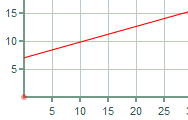
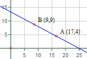
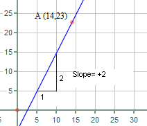
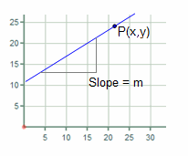
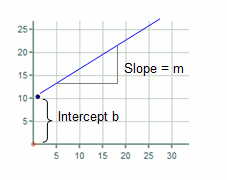

Straight lines in coordinate geometry are the same idea as in regular geometry, except that they are drawn on a coordinate plane and we can do more with them.
Consider the line in Fig 1. How would I define that particular line? What information could I give you over the phone so that you could draw the exact same line at your end?

There are three ways commonly used in coordinate geometry:
In Fig 2, a line is defined by the two points A and B. By providing the coordinates of the two points, we can draw the line. No other line could pass through both these points and so the line they define is unique. I could call you on the phone and say "Draw a line through (9,9) and (17,4)" and you could reconstruct it perfectly on your end.

For an interactive demonstration of lines defined by two points, see

The other common method is the give you the coordinates of one point and the slope of the line. For now, you can think of the slope as the direction of the line. So once you know that a line goes through a certain point, and which direction it is pointing, you have defined one unique line.
In Fig 3, we see a line passing through the point A at (14,23). We also see that its slope is +2 (which means it goes up 2 for every one across). with these two facts we can establish a unique line.
The value of the slope is usually denoted by the letter m. For more on slope and how to determine it see Slope of a Line.
Once you have defined a line using the point-slope method, you can write algebra equations that describe the line. By applying algebraic processes to these equations we can solve problems that are otherwise difficult. These and many other graphing techniques are covered in the algebra volume, but the general idea is described here in Coordinate Geometry.
There are two types of equation commonly used to describe a line:
Both forms are really both variations on the same idea. In both cases you need to know the coordinates of one point, and the slope of the line.
The place where the line crosses the y-axis is called the intercept, and is commonly denoted by the letter b. For more on this see Intercept of a line.

